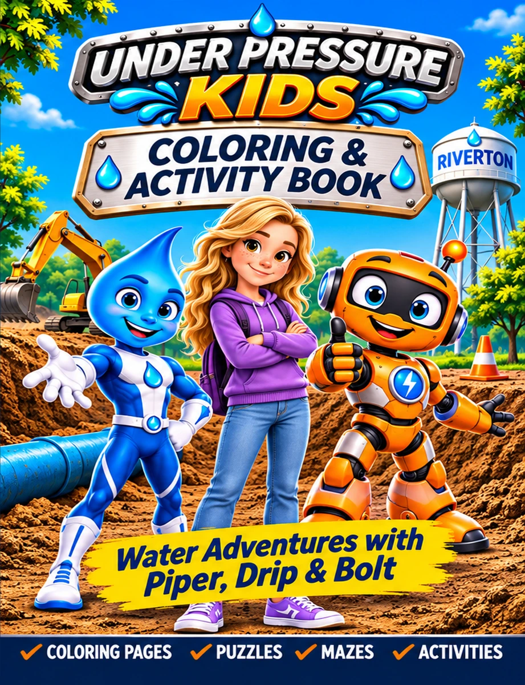

Available now!
Under Pressure Kids Coloring & Activity Book
Water Adventures with Piper, Drip & Bolt
Explore big machines, pipes, hydrants, mazes, puzzles and more. A fun, screen-free way to discover the hidden world beneath our feet.
Buy on Amazon